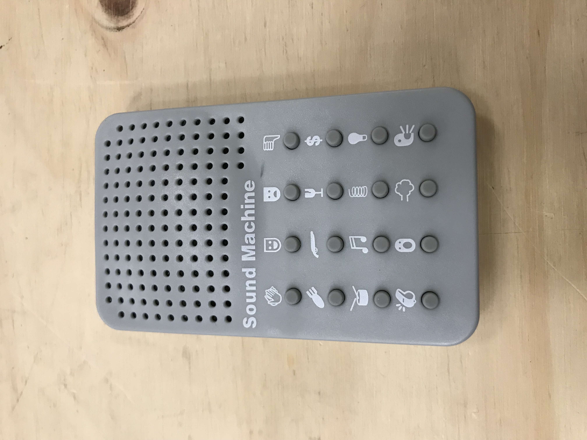
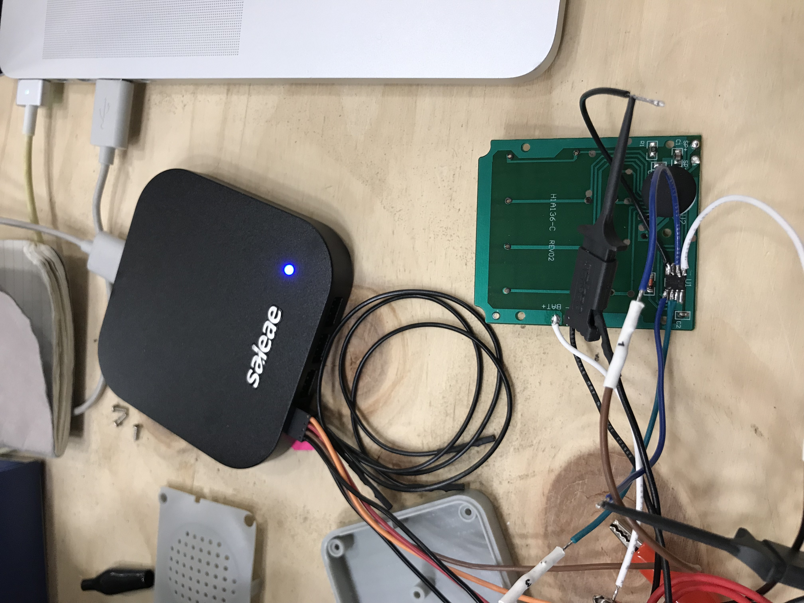
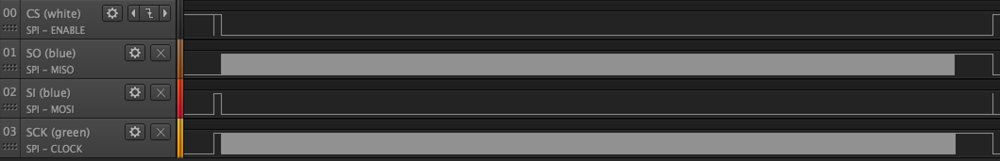
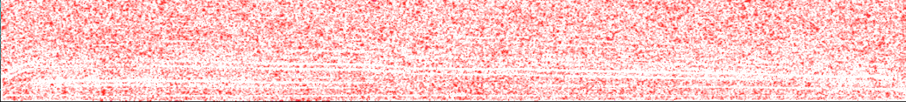

Out of the box the Sound Machine produces sound - specifically 16 extremely loud and annoying samples ranging from screams to farts to spring sproings. The goal of this project is to swap out those sounds for ones of my own design, and maybe end up making a pocket musical instrument in the process.
The Sound Machine toy is fun for about 1 second - roughly the time it takes to push any of its buttons and hear one of its sounds. After that you'll want to tear it to pieces, which is what I always want anyway. I got mine from a friend, but apparently they can be bought for less than $10 on Amazon.
Upon opening the Sound Machine I found a simple two layer PCB with a smattering of passives, a glob top, and an 8 pin SOIC. It was immediately clear the only hope was the SOIC so I took a closer look and found out from its part number that it's a 25L4006E, a 4 Mb serial flash memory chip. Odds seemed good it stores the samples we are interested in.

I hooked up my Saleae to serial input, output, clock, and chip select. I set the trigger on the CS pin transitioning low, started a capture, pushed a button, and immediately hit pay dirt:

For exactly as long as the sample played there was data being read off of the serial flash chip.
I used the SPI analyzer functionality of the logic analyzer software to get the data and exported it to a CSV. Then I whipped up a quick Python script to convert the data to a WAV audio file as if it were 8 bit PCM. Surprisingly this was enough to start hearing the sounds. Unfortunately it's not just that simple because there is a lot of broadband noise in the signal. For example, here's a spectrogram of the scream sound:

You can see the falling frequencies of the scream itself at the bottom, but all over there is noise. For some of the samples a lot come through, but for most you just hear the noise:
I'm not yet sure where the noise is coming from. Getting rid of it is the next step in this project. After I know how the audio is encoded I can try making my own sample data and loading it onto the serial flash.